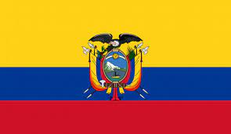

Biodiversidad y buenas prácticas de agricultura climáticamente inteligente para mejorar la resiliencia y productividad de la agricultura familiar en sistemas alimentarios Andinos basados en papa.
Periodo de Implementación
28 Meses
Junio 2019 - Octubre 2021
Paises Involucrados
República de Bolivia

República de Ecuador
República de Perú
Nuestro Objetivo
Mejorar la capacidad adaptativa de los agricultores y actores públicos y privados vinculados con sistemas agroalimentarios Andinos basados en papa en Perú, Bolivia y Ecuador, mediante el desarrollo, aplicación y difusión de buenas prácticas de agricultura climáticamente inteligente, y la articulación a mercados diferenciados.
Entidades Ejecutadoras